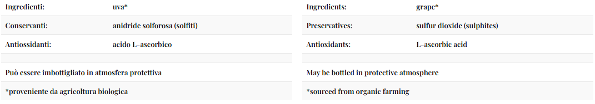
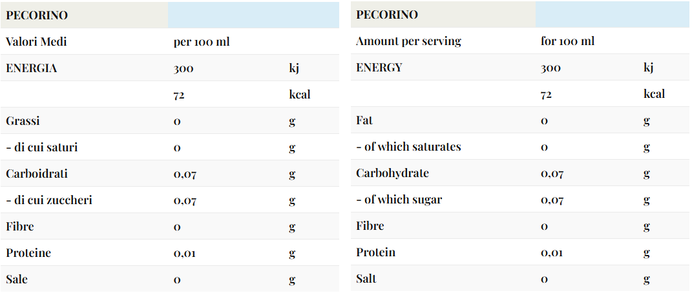
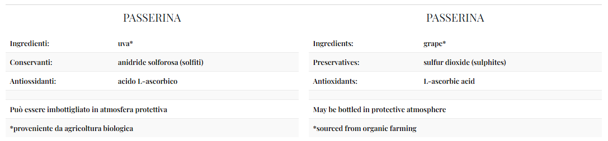
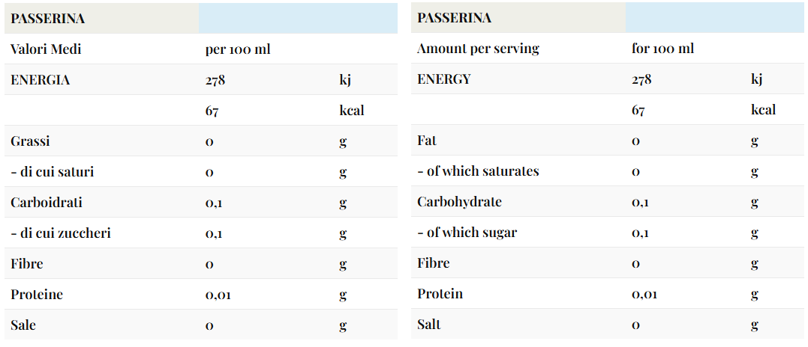
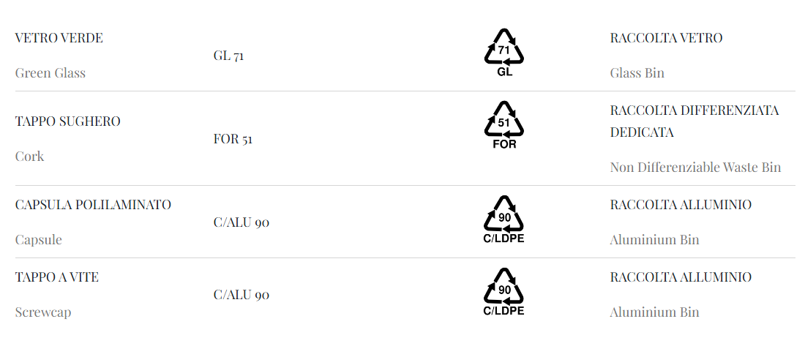
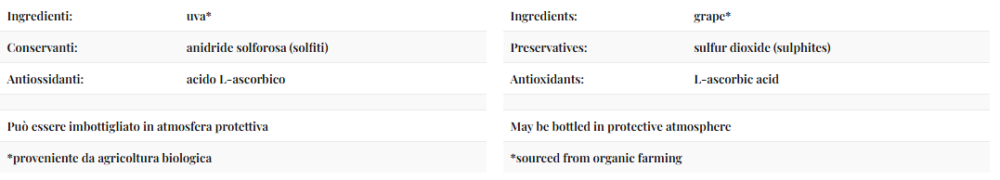

ETICHETTE AMBIENTALI, DEGLI INGREDIENTI E DEI VALORI NUTRIZIONALI
In ottemperanza all’obbligo di etichettatura ambientale di cui al “Decreto rifiuti”, 3 settembre 2020, n.116, emanato per attuare due delle quattro direttive del’Unione Eurupea (le direttive UE/2018/851 ed UE/2018/852, rispettivamente modificative delle precedenti direttive in materia di rifiuti, prima, ed in materia di imballaggi nonche' di rifiuti derivanti da imballaggi, la seconda), costituenti il cosiddetto “Pacchetto Economia Circolare”.
In ottemperanza al Regolamento UE n. 2021/2117 che modifica i regolamenti (UE) n. 1308/2013 recante organizzazione comune dei mercati dei prodotti agricoli, (UE) n. 1151/2012 sui regimi di qualita' dei prodotti agricoli e alimentari, (UE) n. 251/2014 concernente la definizione, la designazione, la presentazione, l’etichettatura e la protezione delle indicazioni geografiche dei prodotti vitivinicoli aromatizzati e (UE) n. 228/2013 recante misure specifiche nel settore dell’agricoltura a favore delle regioni ultra periferiche dell’Unione pubblicato nella Gazzetta ufficiale dell’Unione europea del 6 dicembre 2021.
SMALTISCI CORRETTAMENTE BOTTIGLIE ED IMBALLAGGI / Separate the components and dispose them correctly.
Per il corretto smaltimento, verifica le disposizioni del tuo comune / Check the dispositions of your municipality
Aiutaci a ridurre l’impatto sull’ambiente / Help us reduce our impact on the environment
FLUMINIS – Marche Bianco IGT from Pecorino grapes 100%

ELENCO DEGLI INGREDIENTI – INGREDIENTS LIST

ELENCO DEI VALORI NUTRIZIONALI – NUTRITIONAL INFORMATION

PASSERINA - Marche IGP Passerina
ELENCO DEGLI INGREDIENTI – INGREDIENTS LIST

ELENCO DEI VALORI NUTRIZIONALI – NUTRITIONAL INFORMATION

ARDENS - Marche Rosso IGT from Lacrima grapes 100%

ELENCO DEGLI INGREDIENTI – INGREDIENTS LIST

ELENCO DEI VALORI NUTRIZIONALI – NUTRITIONAL INFORMATION